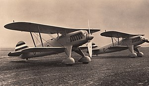
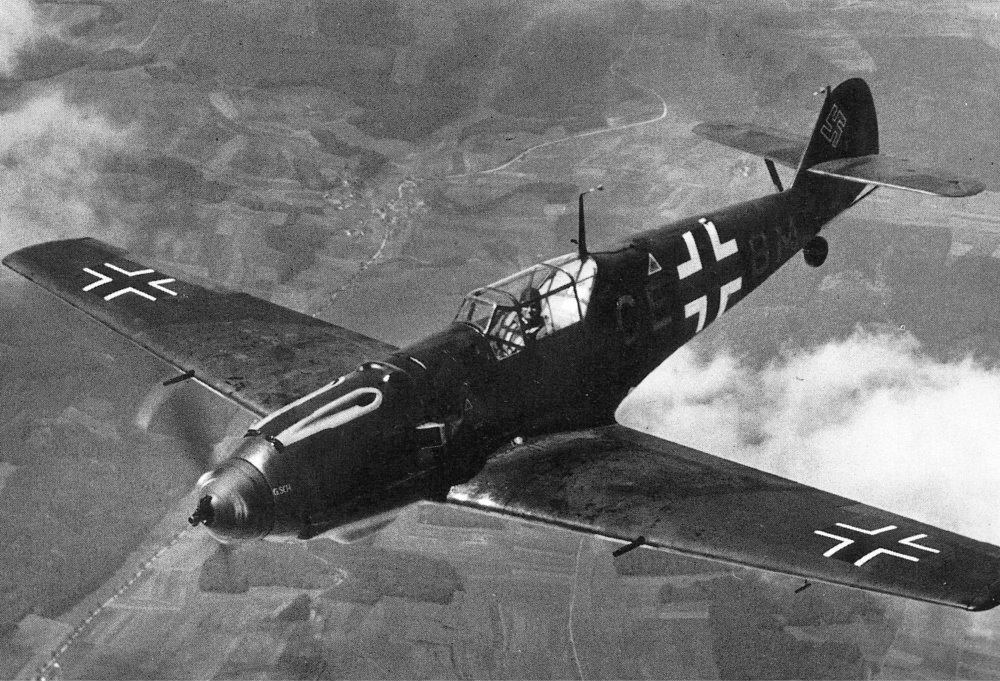
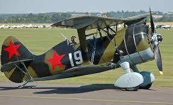
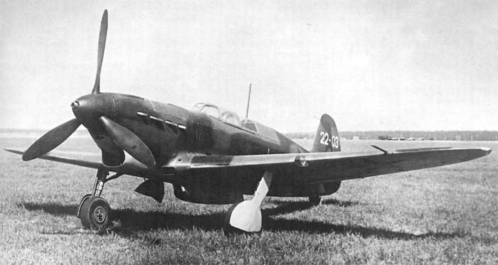
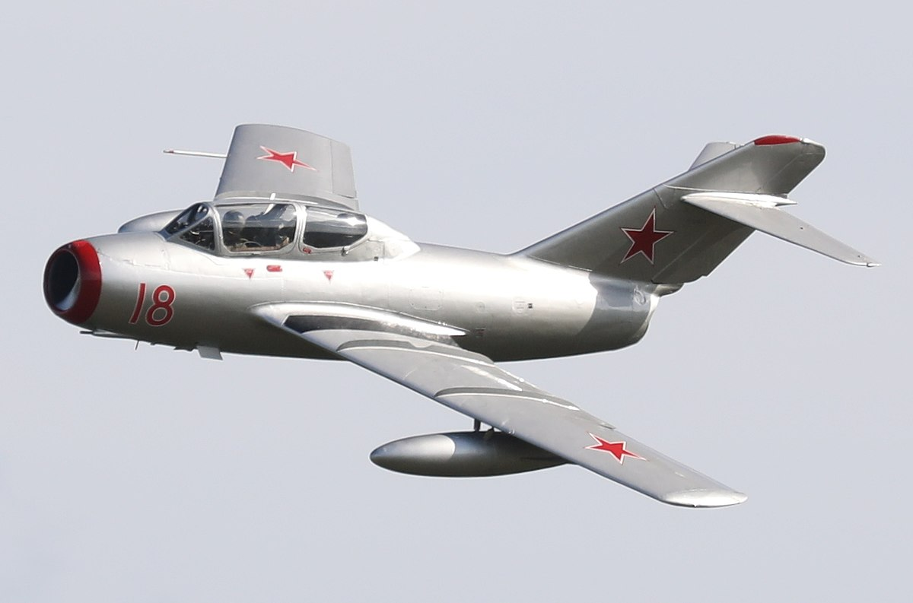
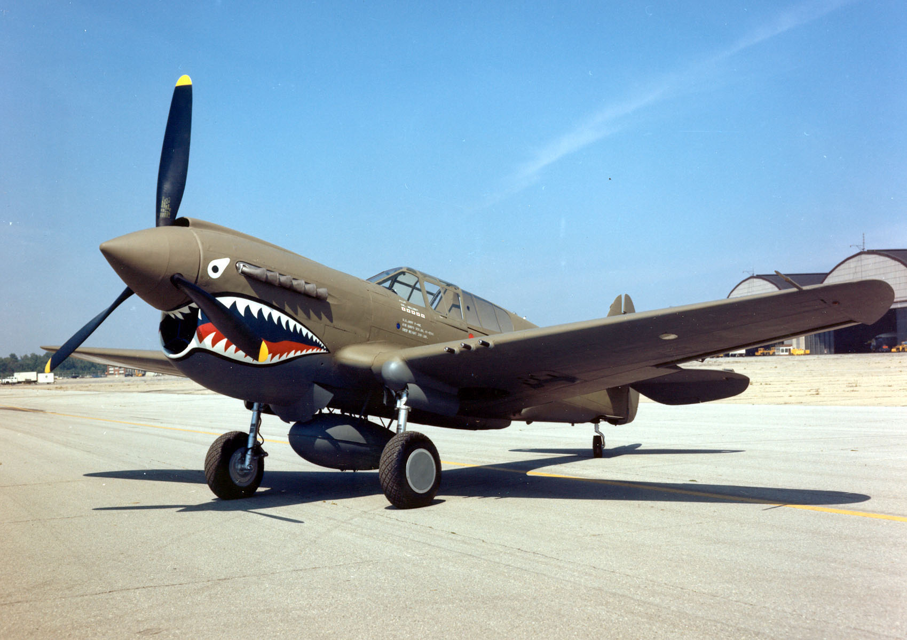
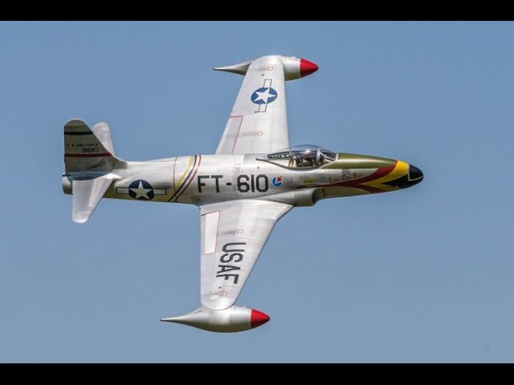
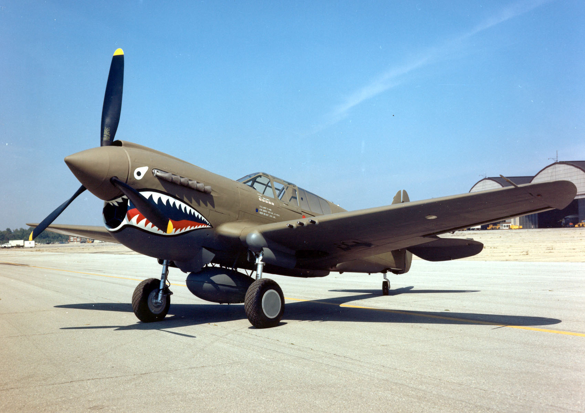
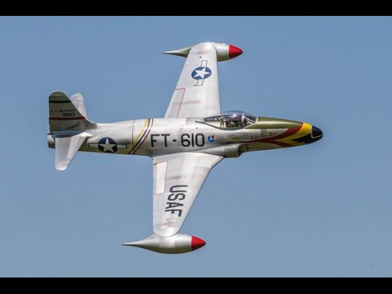

La aviación durante la WW2
Primeros Años
Alemania
 
La Luftwaffe (pronunciado /ˈlʊftvafə/ ( escuchar), literalmente «Arma Aérea» en alemán) era la fuerza aérea integrante de la Wehrmacht (fuerzas armadas) de Alemania en la época nazi. Creada en 1924, reorganizada tras la llegada de los nazis al poder y oficialmente desvelada en 1935 en clara violación del tratado de Versalles, su propósito era apoyar la «guerra relámpago» (Blitzkrieg) de Adolf Hitler a través de Europa. Los aviones que iban a servir en la Luftwaffe alemana eran de una nueva era y técnicamente superiores a la mayoría de las aeronaves de otras naciones en los años 1930.
Rusia
  La VVS fue fundada como la «Flota Aérea de los Trabajadores y Campesinos» en 1918, sustituyendo a la Fuerza Aérea Imperial Rusa. Después de localizarse bajo el control del Ejército Rojo, con la denominación oficial de VVS en 1930, su influencia sobre el diseño de aviones fue cada vez mayor. Después de la creación del estado soviético se hicieron algunos esfuerzos encaminados a modernizar y aumentar la producción aérea. La producción nacional de aviones se incrementó significativamente en los primeros años de la década de 1930 y hacia el final de la década la fuerza aérea soviética pudo introducir los cazas I-15 e I-16 y los bombarderos SB-2, SB-2 BIS y DB-3.
Estados Unidos
 



Las Fuerzas Aéreas del Ejército de Estados Unidos (en inglés: United States Army Air Forces, USAAF o AAF) fueron el arma de aviación militar independiente del Ejército de los Estados Unidos durante e inmediatamente después de la Segunda Guerra Mundial, esta era la sucesora del Cuerpo Aéreo del Ejército de los Estados Unidos y fue la precursora directa de la actual Fuerza Aérea de los Estados Unidos, y existió formalmente entre 1941 y 1947. La AAF era un componente del Ejército de Estados Unidos, que en 1942 fue dividido funcionalmente por orden ejecutiva en tres fuerzas autónomas: las Fuerzas Terrestres del Ejército, los Servicios de Logística (que en el año 1943 se convirtió en las Fuerzas de Logística del Ejército) y las AAF. Cada una de estas fuerzas tenía un general comandante que dependía directamente del Jefe de Estado Mayor del Ejército de los Estados Unidos.